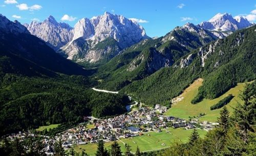
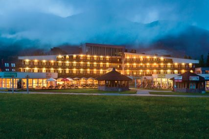
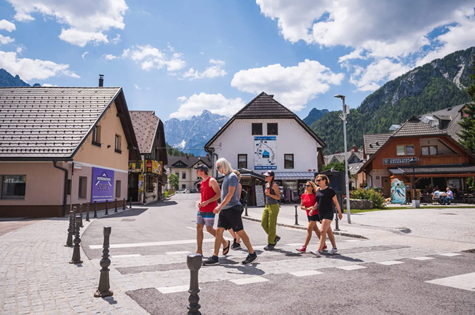
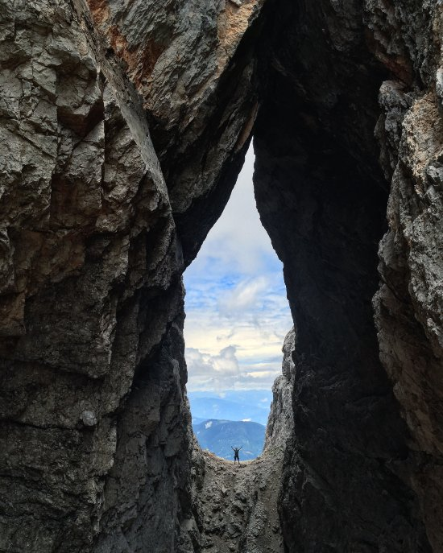

Welcome to ASIC 2023
The 23rd Annual Summer Interdisciplinary Conference, held at the Ramada Resort by Wyndham, Borovska Cesta 99, 4280 Kranjska Gora, Slovenia.

The conference had talks every afternoon and evening on the six consecutive days, Monday July 3 to Saturday July 8, 2023 (the last talks were held the evening of July 8).
The Ramada Resort is a 4* modern hotel with all the facilities ASIC attendees have come to expect; see the hotel website. The meetings, catered breaks, and breakfasts and dinners were held in the hotel.
Kranjska Gora
Kranjska Gora sits in the Julian Alps of Slovenia, on the northern edge of Triglav National Park (home to Triglav, the largest mountain in Slovenia — a national treasure and a hiking and climbing target for many Slovenians and visitors). It is about 40 minutes by car from the international airport near Kranj, north of Ljubljana, and about 2 hrs 50 min from Marco Polo Airport, Venice.
Activities
The area around the Julian Alps is extremely scenic, attractive for everything from casual sightseeing and leisure sports to adventure activities — about 30 minutes by car from the well-known lakeside town of Bled, and about an hour from the resort at Lake Bohinj on the other side of Triglav National Park. The area offers hiking, scrambling and peak bagging, via ferrata, mountain and road biking, rock climbing, mountaineering, paragliding, white-water rafting, kayaking, canyoning, and leisure activities such as sightseeing, fishing, tennis, and golf.
Organizer
Richard M. Shiffrin of Indiana University – Bloomington is the organizer (see the Contact tab for all contact info).
About the conference
The subject matter of ASIC conferences is interdisciplinary, with a primary emphasis on a wide variety of scientific domains within the broad frame of cognitive science. ASIC follows the successful format of previous ASIC and AIC conferences: days are free for leisure activities and discussion among participants, talks are in the late afternoon and early evening, followed by dinner. The dates are chosen to make it convenient for attendees to bring family and friends.
Invitation
The conference is open to all interested parties and their family and friends — no invitation is needed to attend. Due to the small number of speaking slots, if too many attendees wish to speak, the organizer adapts talk lengths and/or selects speakers.
Conference format
There is a single speaking session each day (no posters), intentionally organized to maximize the dissimilarity of each day's presentations. The conference began with registration and a reception with drinks and food from about 15:30–16:00 on Monday, July 3. On subsequent days there were drinks and light snacks from about 15:40–16:00, followed by a session of about seven or eight spoken presentations, which could include a mid-session break. The last evening of talks was Saturday, July 8.
For a listing of all past ASIC sites, see the previous ASIC sites document.
Registration
Registration was made through the Indiana University Conference Bureau, with the fee covering conference-room rental, equipment, and catering for breaks and receptions.
Fee schedule (US dollars)
| Payment window | Fee |
|---|---|
| Prior to January 1, 2023 | $300 |
| January 1 – April 1, 2023 | $350 |
| After April 1, 2023 | $400 |
In addition to the per-attendee registration fee, guest vouchers for others attending receptions and breaks were $25 per guest per day.
Attendees staying at sites other than the conference hotel could take dinner at the conference hotel for 21 euro per person per dinner, paid directly to the hotel.
Lodging
A block of rooms was held at the Ramada Resort by Wyndham, Borovska Cesta 99, 4280 Kranjska Gora, Slovenia.

The Ramada Resort has a variety of room types and, at no charge, high-speed wifi, parking, pool, fitness facilities, a children's animation program, a business center, and casino entry (30% discount for the sauna). See the hotel website.
Airport pickup (per car or van, not per person)
| Airport | Car (1–3 people) | Van (4–8 people) |
|---|---|---|
| Ljubljana Airport | 100.00 EUR | 160.00 EUR |
| Klagenfurt | 100.00 EUR | 160.00 EUR |
| Trieste Airport | 190.00 EUR | 260.00 EUR |
| Venice Airport | 270.00 EUR | 380.00 EUR |
| Zagreb | 180.00 EUR | 240.00 EUR |
Lodging rates
Rates are inclusive except for a tourist tax of 3 euro per day per person, and are half-board (breakfast and dinner). Rates were available June 30 – July 12, 2023.
| Occupancy | Rate |
|---|---|
| One adult, half board | 134 €/day |
| Two adults in one room, half board (both) | 194 €/day |
For larger suites and children's pricing, contact info@hit-alpinea.si.
Reservations & contact
Email lodging requests to info@hit-alpinea.si, or call the reservation department (Slovenia time, M–F 8 AM–6 PM, Sat 9 AM–3 PM): +386 4 589 20 62. Mention you are reserving for ASIC.
Cancellation policy
- Free cancellation until April 3, 2023
- 5% fee: April 4 – May 31, 2023
- 30% fee: June 1 – June 15, 2023
- 50% fee: June 16 – June 23, 2023
- 100% fee: after June 23, 2023
Schedule
Each day began with a reception with refreshments and light food near or in the conference room, starting about 15:40. Talks ran roughly 16:00–20:00, followed by group dinner.
Dining & Receptions
Breakfast was included in the daily lodging price.
Buffet breakfast was available 7:00–10:00 AM. Dinners were buffet style in the main restaurant when talks ended around 8:15, with numerous options including vegetarian choices (vegans were asked to notify the restaurant in advance when reserving). Water and non-alcoholic drinks were available at breakfast, but guests paid for all drinks at dinner.
Daily receptions
Each day there was a catered reception with drinks and finger food near the conference room prior to the speaking session — about 15:30 on July 3, about 15:40 on subsequent days. The registration fee covered these receptions; guests and family members attending only receptions had a reduced registration fee.
Travel
Kranjska Gora is at the north edge of Triglav National Park, close to where Italy, Austria, and Slovenia meet.

The Ramada Resort by Wyndham (not to be confused with the nearby Ramada Hotel and Suites) is at Borovska Cesta 99, 4280 Kranjska Gora. Most attendees flew to a nearby airport and traveled by bus, shuttle, train-plus-bus, or rental car.
The closest international airport is near Ljubljana (near the city of Kranj), about 50 minutes by car, with shuttle, bus, and train-plus-bus service also available. The next closest large international airport is Marco Polo Airport, Venice, about 2 hrs 40 minutes by car. There is also a smaller airport at Klagenfurt, Austria, about an hour by car.
Once in Kranjska Gora, bus services enable visits to local attractions and activities, though most attendees found it most convenient to have a car given the need to return to the hotel in time for conference talks.
Kranjska Gora was first mentioned in written sources in 1326, believed settled as early as the 11th century by Slovenes from Carantania. A railroad connection built in 1870 unofficially started the age of tourism. Today it is a world-renowned ski resort in winter and offers an array of outdoor activities in summer, with excellent road accessibility to Bohinj, Bled, Bovec, Ljubljana, and nearby Austria and Italy.
Activities
Wonderful opportunities for hiking, climbing, and adventure sports in the general area of Kranjska Gora, many suitable for day trips finishing in time for a return to the conference by 16:00.

Hiking
See AllTrails, Moon & Honey Travel, kranjska-gora.si, and slovenia.info for numerous hiking options.
Mountaineering
Triglav (9,396 ft), the largest mountain in Slovenia, is the centerpiece of Triglav National Park, accessible by a combination of hiking and via ferrata or several climbing routes. Given Kranjska Gora's altitude (2,645 ft) and the logistics involved, ascending and returning in time for the conference is not possible — this peak is best scheduled for days before or after ASIC (the ascent normally takes two full days by any route).
Rock climbing
The Vršič Pass area offers a nice collection of rock climbing sites — smooth slabs with good rock offering 35 routes ranging from 18 to 100 meters. As usual, ASIC offered a group climbing day open to everyone from children to experts, on Wednesday, July 5, near Golica close to the Austrian border, about 45 minutes' drive, with a car caravan arranged for transport.
Via ferrata
There are quite a few via ferrata routes in the Kranjska Gora area, varying in length, difficulty, and scenic beauty — a family-friendly favorite offering high mountain exposure and scenic views without technical climbing skill.
Canyoning
Participants don wetsuits and, with guides, descend a mountain stream in a narrow canyon — no experience required, suitable for families and children.
Parasailing
Tandem flights with an expert guide, lifting off from a hillside or cliff, ascending thermals and landing in a field.
Road & mountain biking
Many possibilities exist in the area of Kranjska Gora for both road and mountain biking.
White-water rafting
Another favorite activity for families and individuals.
Leisure activities
The area has many leisure activities including golf, tennis, and adventure parks.
Contact
Email is preferred for all correspondence.
Conference organizer
Rich Shiffrin
Indiana University – Bloomington
shiffrin@indiana.edu
Tel: 812-855-4972 · Fax: 812-219-5892
Webmaster / Conference Coordinator
Ruth Eberle
Phone: (812) 856-5722
reberle@indiana.edu
Postal address
Annual Summer Interdisciplinary Conference (ASIC 2023)
c/o Prof. Richard Shiffrin, Psychological and Brain Sciences Department
Indiana University, 1101 E. 10th St., Bloomington, IN 47405